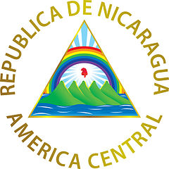

-
Simbolos Patrios
- Bandera
- Escudo
- Flor Nacional
- Árbol Nacional
- Himno

El Escudo de Nicaragua fue creado, junto con la actual Bandera de Nicaragua, mediante el Decreto Legislativo del 5 de septiembre de 1908, siendo Presidente de La República José Santos Zelaya, fijándose de modo definitivo el Escudo y la Bandera de Nicaragua actuales. Se basa en el Escudo que perteneció a las Provincias Unidas del Centro de América.
El Sacuanjoche fue declarada Flor Nacional en 1971

El árbol nacional de Nicaragua es el Madroño, también conocido como el árbol del pan o el árbol de la fruta de coral

Salve a ti, Nicaragua, en tu suelo ya no ruge la voz del cañón, ni se tiñe con sangre de hermanos tu glorioso pendón bicolor. (Bis) Brille hermosa la paz en tu cielo nada empañe tu gloria inmortal que el trabajo es tu digno laurel ¡y el honor es tu enseña triunfal!. ¡es tu enseña triunfal
-
Historia
a historia de Nicaragua recorre el período temporal desde la llegada de Cristóbal Colón incluyendo la llegada de los primeros exploradores españoles para colonización y conquista hasta la fecha
En 1523, Gil González Dávila con licencia real para explorar y descubrir en calidad de empresa estatal de poblamiento, visitó con el contador Andrés de Cereceda, el dominio de Nicarao a orillas del Lago Cocibolca (La Mar Dulce). Avanzó más al norte, pero enfrentó el ataque de Diriangén (17 de abril de 1523), que los obligó a retirarse hacia el golfo de Nicoya. En 1526 fue nombrado gobernador de Nicaragua por el Consejo de Indias, cargo que no llegó a asumir porque falleció el 21 de abril en su natal Ávila, España.
La dominación española permaneció limitada a la costa del océano Pacífico y áreas inmediatas, territorio que fue agregado a la Capitanía General de Guatemala. Cosa que no está muy clara ya que según Francisco Hernández de Córdoba llegó a fundar León y Granada en el año 1524 y murió en el año 1526.
-
Extension Territorial
El territorio de Nicaragua tiene una superficie aproximada de 130 374 km²,1 constituyéndose con ello como el país más extenso de América Central. Nicaragua cuenta con una población de 6 624 554 habitantes (2020). Limita al norte con Honduras, al sur con Costa Rica, al oeste con el océano Pacífico y al este con el mar Caribe.1 En cuanto a límites marítimos, en el océano Pacífico colinda con El Salvador, Honduras y Costa Rica; mientras que en el mar Caribe colinda con Honduras, Colombia y Costa Rica
-
Departamentos
Nicaragua se divide en 15 departamentos y 2 regiones autónomas.
- Boaco
- Carazo
- Chinandega
- Chontales
- Costa Caribe Norte
- Costa Caribe Sur
- Estelí
- Granada
- Jinotega
- León
- Madriz
- Managua
- Masaya
- Matagalpa
- Nueva Segovia
- Río San Juan
- Rivas
-
Lugares Turisticos
- Granada
- San Juan del Sur
- León
- Masaya
- Isla Omotepe